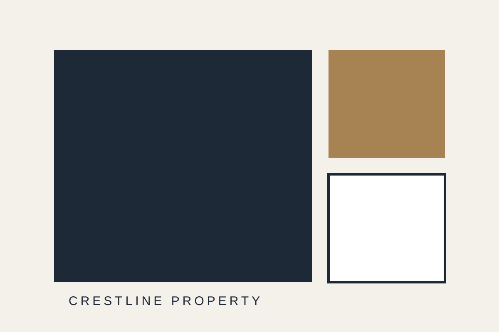

Insight
รับฟังความต้องการและพิจารณารายละเอียดอย่างรอบคอบ
คัดสรรที่อยู่อาศัยและพื้นที่ลงทุนด้วยข้อมูล ทำเล และความเข้าใจเป้าหมายระยะยาวของลูกค้า
ดูโครงการ →
รับฟังความต้องการและพิจารณารายละเอียดอย่างรอบคอบ
ให้ความสำคัญกับมาตรฐานในทุกขั้นตอนของบริการ
สื่อสารตรงไปตรงมาและดูแลความสัมพันธ์ระยะยาว